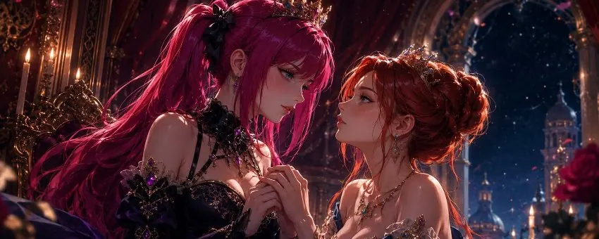
Two Hearts, One Kingdom
Chapter I – The Queen Who Needed No One
Once upon a time there was a Queen who had never waited to be rescued — which, as it would turn out over time, is precisely the sort of decision that Fate takes personally and files away in a drawer marked "later."
Queen Valerie ruled a kingdom that fit her like a dress she had sewn herself: lovely, a little crooked at a few of the seams, and stubbornly her own. Tidy it was not. In the gardens grew whatever felt like growing; the clocks at court each ran wrong in their own confident way; and on Valerie's desk seven brilliant unfinished ideas were stacked beside three forgotten ones and a single half-finished one that — if she ever got round to completing it — would change half the country. Her mind worked like that: loud, simultaneous, running in every direction at once. She could hold a conversation about grain tariffs, finish composing a tune inside her head, notice that someone at the far end of the hall had just lied, and wonder mid-sentence whether she had actually sent yesterday's letter. (She had not.) Others would have called it chaos. Valerie simply called it her kingdom and ruled it with the offhand authority of someone who knows the disorder will never let her down, because it belongs to her.
She had filled it with people she loved and who loved her — with friends who stayed until the candles had burned down, with lovers who came and went and sometimes came back in the middle of the night, with a few souls for whom there was no fitting word at all, and with so much tenderness, desire and friendship that the palace never really slept, but at most closed its eyes for a moment and kept breathing.
Valerie had no patience for the notion that love grows more precious when hoarded for a single person. It struck her as the sort of thing done by people who put the good china in the cabinet and then die without ever having eaten off it. There was room in her heart for many, and — while we are on the subject — in her bed as well. She saw no reason to apologize for either. It saved everyone involved a great deal of time and at least half of the usual drama.
And she liked to flirt. Not out of calculation, but the way other people hum when they are in a good mood. A glance that lingered a second too long and wandered, quite idly, from the eyes to the mouth and back again. A smile that promised rather more than the small print actually covered. A sentence spoken close to an ear, just so, so that the breath stirred the fine hairs at the nape of a neck and one could read from the other's small shiver whether the message had arrived — it usually arrived. Valerie flirted with her mind as much as with her body: a well-placed word was worth as much to her as a well-placed touch, and best of all she liked the people quick enough to strike back. Mostly it stayed a game, a promise with no due date, and that too was perfectly fine. For she could desire without wishing to own, and love without handing over the keys to her kingdom — which she carried, like everything that truly mattered, herself, on a ribbon round her neck, where they lay cool between her breasts and reminded her whose establishment this was.
What almost no one knew was that beneath all the ease lay a more delicate mechanism. A glance too cool, a sentence that came out a shade too curt, a door opened a moment too late — and somewhere deep in Valerie something clenched, quick and soundless, long before her reason had a chance to step in and soothe. She had learned to show this to no one. It belonged to the rooms that appeared on no floor plan.
The idea of becoming someone's Princess had therefore never seriously occurred to her. Princesses, she had observed, waited — in towers, for horses, for someone with the right shoe or the right disposition. Waiting seemed to make up the greater part of their professional duties. Valerie had little use for towers, chiefly on account of the stairs, the draught, and the view, which by the third day was no more thrilling than before. If there was a tower, she found her own way out, through the window if need be and with a good deal of swearing. If there was a dragon, she tried a conversation first — dragons, in her experience, were mostly lonely, badly informed and chronically misunderstood, and all of that could be remedied with far less fire than the relevant stories claimed. The relevant stories, mind you, had not been written by dragons.
Somewhere beyond the familiar halls of her palace, however, there was another Queen whose path had crossed hers more than once — noticeably more often than mere chance could have afforded in the long run without going into the red. Her name was Hussy. She was one of those women who, on entering a room, changed its temperature imperceptibly, and no one could have said whether it grew warmer or merely more alert. Above all, though, she was clever — clever in that dry, incorruptible way that Valerie found almost nowhere else and therefore enjoyed all the more. Talking to Hussy was like fencing with someone who parried every lunge and smiled while doing it, and Valerie, who loved quick minds the way other people love good wine, caught herself seeking those duels out.
And there was one more thing that set Hussy apart from her. Where Valerie's heart was by nature many-voiced, Hussy's was more a heart for a single melody. She did not spread herself; she was not one to keep two doors open at once. She had, it seemed, always arranged her life for one person at a time — and looked upon Valerie's lively, wide-open kingdom with a mixture of bafflement and a curiosity she did not quite admit to herself. Perhaps that was part of the pull: that neither of them could read the other's map.
Their encounters were brief. A flirtation at a banquet, a glance over the rim of a glass, a hand that lingered a moment too long on Valerie's forearm in passing and left behind a trace of warmth that was still tingling there when Hussy was long since talking to someone else. Then each vanished back into her own life, with the reassuring certainty of not having begun anything she would later have to go to the trouble of ending.
Valerie liked her. She desired her too, which is not the same thing but gets along with it splendidly. There were nights when she thought of Hussy — she, of all people, who rarely thought of any single one — and wondered whether that mouth really looked the way it promised to when it smiled. But Hussy belonged to those beautiful possibilities that felt so pleasantly safe chiefly because one left them unfinished — the way an unopened letter can hold infinitely many good tidings, so long as one simply does not open it.
Or so Valerie told herself, with the practised ease of a woman who had a great deal of experience in telling herself things convincingly.
She needed no second Queen to complete her kingdom. And she certainly needed no one to conquer it.
What she did not yet know at this point — and stories like this one live on somebody not yet knowing something while the narrator already suspects it — was that Hussy would never need to conquer anything.
One day, Valerie would open the gates all by herself.
And, which was almost worse: she would admit it.
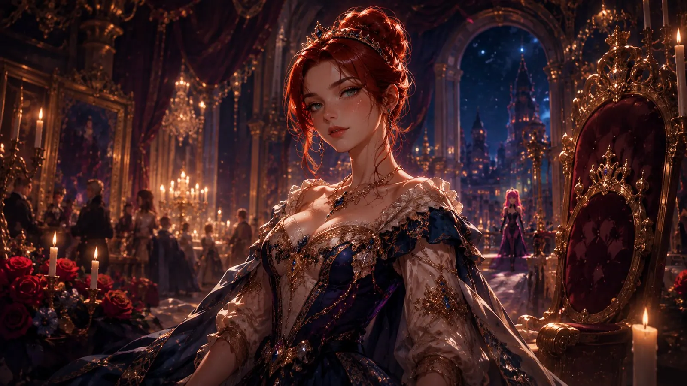
Chapter II – The Queen on the Other Side of the Hall
Queen Hussy had never actually appeared in Valerie's story. That would have required a beginning, a curtain rising, an entrance with a fanfare and a herald who had cleared his throat beforehand. Instead she had somehow always been there — the way a piece of furniture is there, no one remembering who carried it in, but everyone missing it at once were it gone. Their paths crossed often enough that it had stopped feeling like coincidence: a few words at a table, a teasing smile between two doors, now and then a conversation that turned more serious than either had planned and that neither brought to a close, because a conversation brought to a close would have had the inconvenient task of having consequences. Then one of them would disappear back into her own life, and the moment was over. At least, that was what Valerie told herself, and she had, as noted, practice in it.
Hussy was hard to miss. Her vivid pink hair saw to that, but that was the least of it. She carried herself like someone who had never had to have it announced that she was a Queen — which, when you thought about it, is the most convincing way to be one; those who have it announced have mostly only rented the position. Sometimes she was playful, sometimes shameless, sometimes distant in a way there was no proper word for, and Valerie enjoyed all of it more than was probably advisable. Above all, though, Hussy was clever, and clever in that dry, incorruptible way that gives one the feeling of finally having a worthy opponent across the board. She parried Valerie's remarks before they were fully spoken and struck back with a composure that touched Valerie somewhere other than the mind. There are women who kiss with their mouths, and women who kiss with their sentence structure; Hussy, to Valerie's lasting annoyance and delight, was mistress of both.
They flirted effortlessly, precisely because nothing depended on it. That was the kind of tension Valerie liked best: the quiet question of what might happen, without the tiresome obligation of ever answering it. With Hussy, though, the question had the inconvenient habit of coming back — and, worse still, of taking up residence in Valerie's head, that already overcrowded place where everything talked at once. In a full hall, where Valerie's attention would normally leap like an unleashed dog from candle to conversation to wineglass to an interesting pattern in the carpet, there was one single point at which that dog reliably stopped, pricked up its ears and forgot everything else. That point had pink hair. Sometimes Valerie caught herself scanning the hall for her, quite idly, the way one idly checks whether one's crown is still in place. Sometimes Hussy would suddenly be standing beside her, as though she had been doing exactly the same thing and had merely been quicker about it.
They teased each other, edged a little closer, withdrew again before either had to decide whether the game meant anything. Probably because both of them knew how good a crown is for taking cover behind. And perhaps, too, because Hussy had something to lose that Valerie did not quite understand. For a woman who gave her heart to one melody after another, a flirtation was small change, spent in passing. For one like Hussy, who only ever kept a single door open at a time, every step weighed more, because it might have been a beginning — and beginnings, in Hussy's bookkeeping, were expensive.
One evening Valerie noticed her across the ballroom. Hussy was surrounded by others, smiling, talking, wholly absorbed in her own little world. Valerie looked a moment longer than could strictly be justified — long enough to notice the line of her throat, the way she threw her head back when something truly amused her, and the brief, warm thought of what it might be like to have that particular head to herself for once — and then Hussy turned. Across the whole hall their eyes met, and for a few seconds neither of them moved. It was one of those moments when the air between two people seems briefly to thicken, as though one could balance on it. Hussy gave her only a small smile. Not the playful one she handed out so freely, but a quieter, almost private one, plainly not intended for the rest of the room, and one that Valerie felt somewhere below the ribbon of keys.
A moment later Hussy turned back to her conversation, and Valerie did the same, though she retained not a single word of what she was now being told. It was, she believed, about grain prices. It might equally have been about an uprising; Valerie would have nodded politely and accidentally approved it. Later she would remember that smile and wonder what might happen if one of them finally crossed the hall, instead of forever remaining on the other side. For the moment, though, they stayed two Queens circling one another — close enough to feel the pull, and clever enough not to ask it for directions.
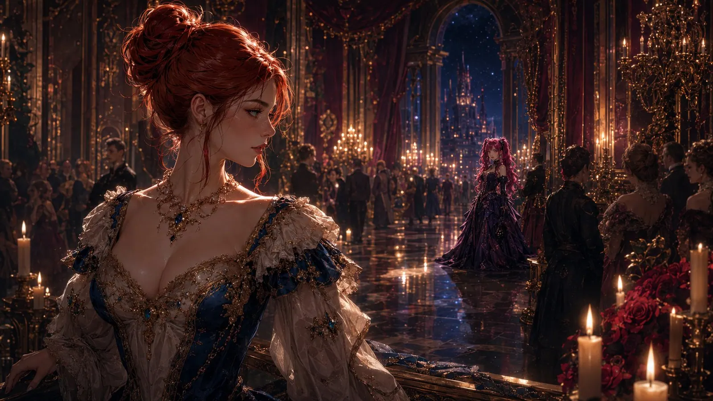
Chapter III – The Dance That Never Bega
There were moments when Valerie thought they might finally stop circling one another.
Sometimes Hussy came closer than usual. A conversation ran longer than a conversation needs to run when it has nothing in mind. A joke turned more personal, slipping from politics down through court gossip to that sort of remark one makes only to a person whose reaction genuinely interests one. The playful distance between them would suddenly shrink to a measure at which Valerie sensed the other's warmth against her own cheek, at which she could have described the colour of Hussy's eyes without guessing, and at which her own pulse — that usually so reliable courtier — began to behave improperly. Valerie would feel the familiar pull then, and wonder whether this was the moment in which one of them would say something that could no longer be taken back.
But somehow they always stopped just short. Precisely, with the practised accuracy of two people who had considerably more experience in evasion than in arrival — and who were clever enough to see through their own evasion, which did not slow it in the slightest. Intelligence, Valerie was obliged to note with some irritation, is an excellent tool for grasping what one is doing, and a wholly useless one for stopping.
They were both, presumably, waiting for a certainty that refused to come, because certainties rarely arrive where one waits for them — they prefer to turn up later, once no one has any use for them anymore, and then pretend they had been within reach the whole time. Valerie could never quite tell whether Hussy's attention was merely another pretty flirtation or whether something deeper lay beneath it. And here that quiet, delicate mechanism inside her spoke up, the one that read a verdict at once from a glance that failed to come: She has changed her mind. She never meant more. You imagined it. Valerie knew the voice, she knew it spoke too soon and too surely, and she believed it a little every time all the same, before her reason came along and tidied up.
Hussy, in turn, had every reason to wonder the same. For her a flirtation was no small change. She was used to keeping a single-line account with her heart, and Valerie — warm, wide, with her open doors and the many names that ran tenderly through her palace — fit no format Hussy knew. Valerie was warm, tender and seldom shy about desire; but that hardly meant every spark was meant to become a fire. Most sparks simply want to be a spark for a moment and then go out in peace. The only question was whether this was one of them.
So the little dance went on. They stepped toward each other, lingered a while in that charged nearness in which a single wrong or right word would have tipped everything, and stepped apart again before either had to risk anything. It was easy to pretend nothing had changed, because strictly speaking nothing had. They were still two Queens with their own lives, their own people and their own kingdoms, which on paper made for an impeccable order and, in the chest, an increasingly untidy one.
And yet something stayed behind each time they turned away. Not much. But feelings, in this respect, are like sand: you walk through them and afterwards carry more of them around than you would like, in places you only notice later, mostly at night, mostly just when you badly wanted to sleep.
Valerie began to suspect that Hussy had long since ceased to be merely someone she liked to flirt with. She had become someone Valerie noticed when she was not there — which, if we are honest, is the real giveaway. Presence can be enjoyed. Absence, on the other hand, must be endured, and one only endures what means something. And for a mind like hers, which never stood still to begin with, it was an entirely new and unsettling experience that a single person could take up so much room in it without even being present.
Still, neither of them opened the door.
The strange thing was that it would have taken no grand confession to change everything. No dramatic declaration, no royal proposal, no perfect moment beneath the stars — such moments are overrated in any case, and mostly draughty.
In the end it would take only a single small question, asked from a place of uncertainty. And that one, of all things, would come from the one Valerie least expected.
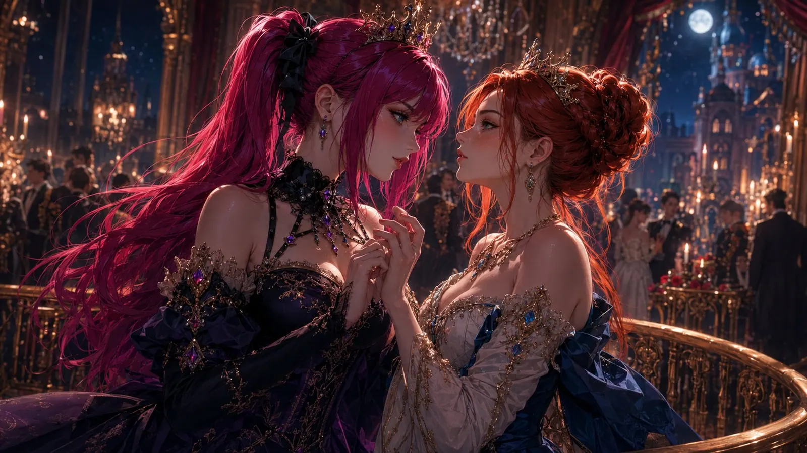
Chapter IV – The Question
In the end it was not a confession that changed everything. It was a question. Which is remarkable insofar as confessions are generally undertaken with a great deal more effort — kneeling, candles, occasionally a choir engaged for the purpose — and achieve a great deal less. A question demands an answer. A confession demands only applause.
Hussy asked it from a place Valerie had never seen in her before. There was something uncertain in it, something soft beneath the ease she usually wore as effortlessly as other people wear a coat. For a brief moment, Queen Hussy seemed to forget entirely that she was a Queen at all. She was simply Hussy — wondering, hoping and, most astonishing of all, a little afraid of what answer might come. Her cleverness, which usually went before her like a blade, she had laid aside for this one moment, and without it she stood strangely unguarded, the way a fencer lowers the weapon to show that she means it.
One has to understand what this question cost Hussy. For a woman who entrusted her heart only ever to a single person at a time, what she was asking was no small matter. She was not merely asking after Valerie. She was asking after a whole world whose rules she did not know — a world of open doors and many names, in which love was not proven by sending everyone else away. There was a faint tremor in her voice that had nothing to do with Valerie and everything to do with the realization that, in order to want something you do not understand, you must first admit that you want it.
Valerie noticed at once. Her mind, which usually processed everything at the same time and nothing all the way, went for the space of a heartbeat perfectly still — that rare, precious state she otherwise reached only when something truly, wholly took hold of her. It was only a narrow opening, hardly more than a crack in a door that had always been carefully closed, but through that crack she caught a glimpse of something real. And the real, unlike the merely well-meant, has a gravity of its own; you know it by the fact that you take a step toward it without meaning to. Hussy was not flirting now. She was not playing with distance, not hiding behind a clever smile — and a clever smile is the favourite refuge of all those with too much to hide. She let Valerie see that behind the crown a heart was beating, and that this heart was nowhere near as untouchable as Valerie had assumed.
Something in Valerie softened.
For all her independence, she knew very well how hard it is to show another person precisely the places where you can actually be hurt. She herself had spent years being generous with tenderness while keeping the deepest rooms of her own palace carefully locked — the rooms that appeared on no official floor plan and that even the staff knew only by hearsay, the rooms where the delicate mechanism lived that flinched at a wrong glance. And now Hussy had entrusted her with one of hers, if only for a moment and with the door open a crack.
And suddenly Valerie understood that she could do the same. More than that: that she wanted to. That the thought of showing this one person one of her hidden rooms did not frighten her as it should have, but sent something warm rising in her that tasted dangerously like relief.
There was no dramatic declaration that night, no orchestra waiting to swell at exactly the right moment. Orchestras are ill-suited to such occasions anyway, if only because they would have to rehearse and then the whole thing would get about. There were only two clever women who had stood far too long on opposite sides of the same ballroom and now finally understood that perhaps neither of them had ever been afraid of wanting the other.
They had been afraid of being seen doing it.
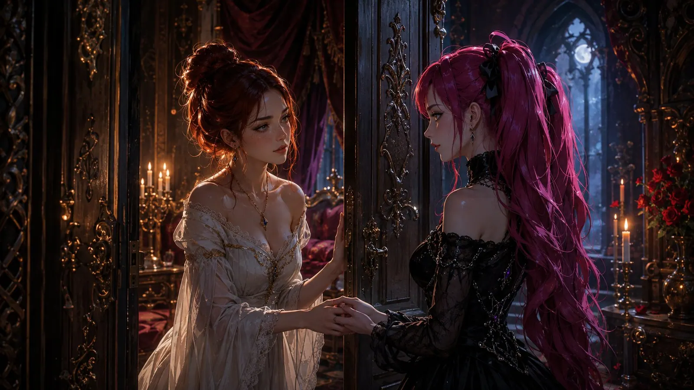
Chapter V – The Door Valerie Had Never Opened
After that question, something between them changed. Not loudly, not all at once, but clearly enough that Valerie felt it the moment Hussy was near — a quiet tilting of familiarity, the way the air changes just before rain, without one's being able to say what exactly is different. The old game of teasing and retreating was still there, but beneath it now lived something new, for which the court kept no protocol and therefore no polite formula either: trust.
Valerie had always been generous with tenderness. She could flirt, love and desire without flinching — but there were parts of her she guarded more carefully than the crown jewels, and for the same reason: you only really miss either once they are gone. Independence had become so natural to her that she scarcely noticed the walls around those softer places anymore. She did not expect anyone to carry her, to guide her, or to take decisions off her hands. She had taken far too long to become her own Queen to sublet the position lightly.
And yet there was a longing she rarely admitted to herself. Valerie's mind was a place where the working day never ended. Every decision, every arrangement, every half-finished thought landed in the end on her desk, and the desk was, as mentioned, already well stocked. Always being the strongest, always being the one who knew what came next, was a role Valerie filled effortlessly and that secretly exhausted her, the way it exhausts an instrument never allowed to stop playing.
Hussy's brief moment of uncertainty had shifted something. By showing herself to Valerie without armour, she had made it safe to set a little of one's own aside — and armour, this is the uncomfortable truth, is chiefly heavy and poorly ventilated; one mostly keeps it on because no one has ever assured one that it may come off. Slowly, almost cautiously, Valerie began to show her things she otherwise kept well locked away: the need for reassurance beneath all the self-assurance, the wish to be held for once instead of always being the one who holds, and that curious peace that settled over her when she left the lead to someone she trusted.
And it was this peace that surprised Valerie most. There were moments — tentative at first, then more often — in which Hussy quietly said what would happen next, and in which Valerie found that the noisy hall inside her head fell silent for a moment. It was as though someone had laid a single hand, from the outside, over all the fidgeting threads she otherwise tried to hold alone. Not to take anything from her. Only to keep them still for a while. For a woman whose thoughts otherwise ran in fourteen directions at once, this was no loss of power. It was the first time in a long while that it was quiet enough to feel at all how loud it usually was.
Hussy did not storm through the opening. She did not demand more than Valerie offered, and she did not treat her softness as something to be conquered — which was remarkable, given that half the world, faced with an open door, immediately thinks of marching in. She read Valerie instead the way she read everything: attentively, patiently, with that intelligence which knew very well the difference between a yes that is given and a yes that is taken. She simply stayed close enough that Valerie could decide for herself how far she wanted to go, and far enough that no decision ever felt forced.
That was exactly what made the difference.
For the first time, Valerie began to understand that surrender need not mean losing herself. Perhaps there could be, in her noisy, wide, overcrowded kingdom, a single quiet room in which she did not have to be the strongest. A place where she might set the crown down for a while, in the firm trust that it would still be lying there when she wanted it back. Crowns, Valerie had learned, do not run off. Mostly it is the people around them one has to keep an eye on. With Hussy she did not.
And without quite noticing when it happened, Queen Valerie opened a door she had always assumed would stay locked forever. Behind it, as it turned out, was no broom cupboard.
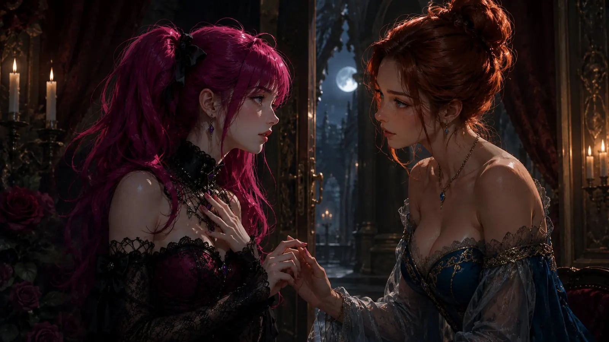
Chapter VI – Two Queens
For a while, neither of them tried to give a name to what had changed between them. Names are useful when you want to administer something, but they have the tiresome property of pinning a thing down the moment you say it aloud — and it was still too early for pinning down. They merely stopped pretending nothing was happening, which for two women who had raised concealment to an art form was already considerable progress.
Hussy had become more than a beautiful distraction in the course of a day, and Valerie more than someone Hussy happened to flirt with when their paths crossed. Their conversations grew longer, softer, more honest, and yet kept their edge — for two clever women do not stop challenging each other simply because they have come to care; they merely do it more fondly. There was still teasing, still that spark, but it rested now on something warmer. They began to entrust each other with thoughts expressly not meant for an audience — and a court, it should be noted in passing, consists largely of audience that takes itself for cast.
For Hussy all of this was uncharted country, and it put her, with a certain delay, in good spirits. She had travelled all her life with a single map, on which there was exactly one road and exactly one destination, and had long believed that any other map must inevitably lead astray. Now she stood at the edge of Valerie's wide, open land and found, half against her will, that the many roads did not cancel each other out. That Valerie loved others did not make what she felt for Hussy any smaller — no more than a second window darkens the view from the first. It was a sum that did not add up in Hussy's old ledger and added up effortlessly in this new one, and she caught herself reading the new ledger with growing curiosity.
What surprised Valerie most was how little urge she felt to defend herself. Hussy did not demand that she become smaller, quieter or more low-maintenance. She did not try to close the doors Valerie held open for the other people she loved — a mistake less clever applicants were fond of making, in the mistaken belief that a heart is a throne with room for only one person at a time. Hussy simply stepped closer and made herself a place among them, not by demanding it but because Valerie wanted her there, which makes all the difference: the one is a siege, the other an invitation.
And yet — and this Valerie noticed at first barely, then with some astonishment at herself — something in her own way of loving began to shift. Not that she slammed her doors shut; that would not have been Valerie, and Hussy would not have wanted it. But the noisy, hungry part of her that was forever on the lookout for the next beautiful possibility grew quieter. Not because she suppressed it, but because, for the first time, it was largely satisfied. She still flirted, of course — one unlearns that as little as breathing — but she no longer pursued the sparks with the same wildness. It was not a restriction imposed on her. It was one she chose herself, as offhandedly as one stays seated by a warm hearth rather than going out into the cold once more simply because one could.
For the first time, the question of who stood above whom did not arise. Hussy had her crown, Valerie hers, and neither had to set it aside. They could meet as equals, two Queens with their own kingdoms and their own decidedly untidy hearts, sharing something without laying claim to everything the other was. That is rarer than one might think. Most of those who speak of sharing in fact mean taking over, and have merely chosen the more polite word.
And there Valerie finally stopped wondering whether the old flirtation had ever meant anything.
It had.
They had only needed long enough to become brave enough to admit it.
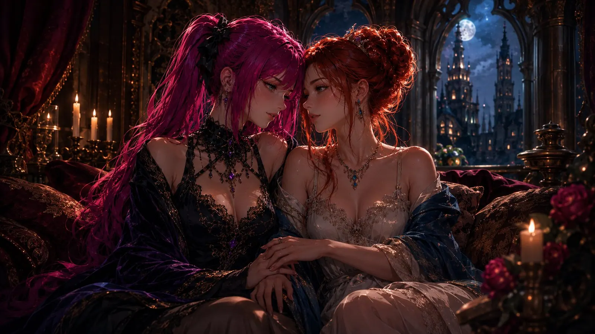
Chapter VII – The Queen Who Wanted a Princess
It happened slowly enough that Valerie missed the moment when the word began to feel right. That is how one misses most important moments: not because they are too quiet, but because they refuse to make their entrance on cue and instead arrive when one is thinking of something else entirely — in Valerie's case, therefore, practically always.
At first, "Princess" had sounded almost absurd to her. The word belonged to someone softer, someone who waited to be guided, protected or taken into possession — preferably in that order and with due advance notice. Valerie had taken far too long to become her own Queen to picture herself seriously in that role. And yet, with Hussy, the word did not make her smaller. It felt private. Confidential. Like a name that belonged solely to the little world the two of them were just then building — a world for which there was neither a map nor a retinue nor, thank goodness, a protocol.
Hussy never asked Valerie to give up her crown. That was precisely why Valerie could take it off in her presence. She was still free to be stubborn, independent and, whenever she pleased, entirely un-commandable — but there were moments when she wanted Hussy to take the lead, and those moments had little to do with weakness and everything to do with quiet. When Hussy said, in that low, sure voice, what she wanted of her, a weight fell from Valerie that she had carried so long she had taken it for part of her own body. The noise in her head subsided. The fourteen simultaneous thoughts arranged themselves into a single one. She had to decide nothing, survey nothing, hold nothing together — she had only to be there, and that alone was, for a woman like her, an almost indecent luxury.
She liked the quiet thrill of Hussy telling her what she wanted; the warmth of her approval, which felt like a stove being lit in a long-cold room; and that peculiar peace that came from trusting someone enough not to have to steer every single moment herself. Steering everything yourself is, as the self-help scrolls tend to omit, exceedingly tiring, and nobody hands out medals for it. And there was one more thing Valerie owed to that delicate inner mechanism of hers: that Hussy leading her also meant Hussy caring for her, Hussy seeing her — and to the anxious little sentinel deep inside her, the one that knitted a rejection out of every silence, a clear, attentive sentence from Hussy was like a hand that said: You are not too much. You are exactly right. Stay.
Perhaps that surprised Valerie most of all: being Hussy's Princess was not the opposite of being a Queen. It was merely another part of her, one for which she had never before found the right person to show. Hussy had not created that part, and she had not conquered it. She had only made Valerie feel safe enough to discover that it had been there all along — like a room one walks past for years without ever pressing the handle, firmly convinced that behind it lies nothing but a broom cupboard.
And so, somewhere between tenderness, teasing and the first tentative steps into something deeper, Queen Valerie became Princess Valerie too — not because she had given up her kingdom, but because she had finally found a Queen she wanted to kneel for.
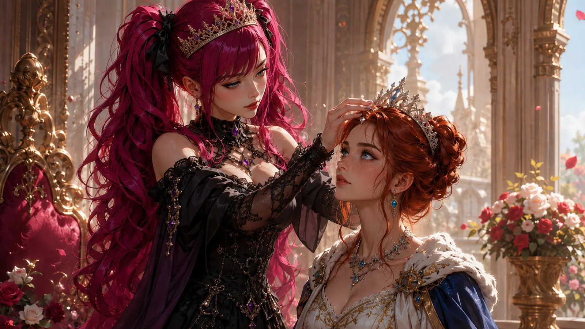
Chapter VIII – The Princess at the Edge of the Kingdo
The first days as Hussy's Princess felt almost unreal to Valerie. Everything between them was new, still warm from the discovering, and she enjoyed the softness of it more than she had expected. For once she did not have to be the one who always knew what came next. She was allowed simply to let herself fall into the feeling and trust that Hussy would be there — an exercise that requires about as much grace as trust ever does, which is to say more than it looks from the outside.
But kingdoms are seldom quiet places, and Queens are most reluctantly permitted to belong to a single moment. Hussy had her own thoughts, her own people, her own things tugging at her attention. None of it was meant to hurt Valerie, and Valerie knew that — with the mind, which in such matters is always perfectly informed and utterly powerless. Intentions, in any case, are notoriously poor messengers; they reach the heart mostly long after the effect they were supposed to prevent.
Little by little, Valerie began to feel as though she had drifted to the edge of Hussy's field of view. And here that old, delicate mechanism inside her spoke up, quietly at first, then with growing conviction — the one she had hidden so well. A glance that did not come. A reply that took a day too long. A hand that was busy elsewhere. For another person these would have been trifles, hardly worth mentioning. In Valerie, however, something pulled at an invisible thread, and before her reason could so much as raise an eyebrow, the sentinel deep within her had already passed the entire verdict and neatly sealed it: She is withdrawing. You were too much. You imagined all of it, the open doors and the kneeling, and any moment now she will tell you so.
It was not that Hussy had stopped caring. It was something far less dramatic and, for that very reason, harder to put into words. The warmth was still there, the tenderness had not vanished. But Valerie had entrusted Hussy with a side of herself softer than anything most people ever got to see, and soft places have the impolite habit of making every small distance seem larger than it really is. An armoured heart barely notices when someone takes a step back. An open one counts the steps — and a heart like Valerie's, which counted every step three times over to begin with, was soon reckoning with numbers that did not even exist.
Valerie could simply have put her crown back on and pretended it meant nothing to her. That would have been easy. When it came to standing on her own two feet, she was, after all, a proven master, with years of professional experience and, had such a thing existed, the references to match. The old reflex lay ready: bolt the doors from the inside, drown the hurt in busyness, begin twelve new projects and finish none, and above all — say nothing, whatever happened, for to say something would be to admit it hurt, and to admit it hurt would be to hand someone the tool. So the sentinel had always done it.
But being Hussy's Princess had begun to mean something to her, and so she did not want to slip quietly into the background merely to spare herself the embarrassment of having needed anyone. She knew the reflex, she recognized it this time by name, and — this was new — she resolved not to obey it.
So, for the first time since they had found each other, Valerie had to ask what it actually meant to be a Princess. Not in the playful moments, not in the teasing or the warmth, but in the moment when the person you trust looks, for a while, somewhere else — and when your own, all-too-quick fear whispers that the glance will never come back.
And she realized: to be soft did not mean to be silent.
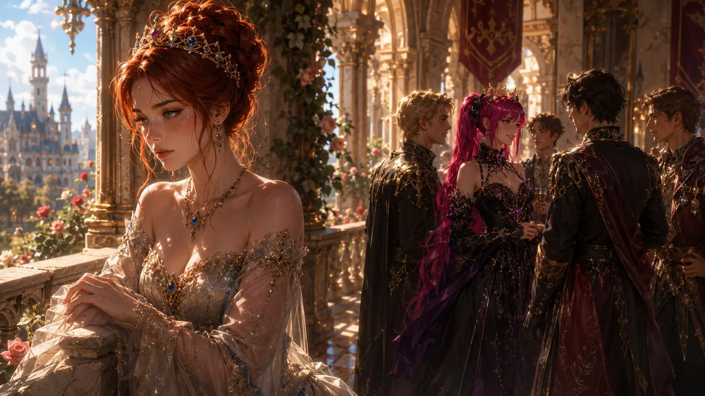
Chapter IX – The Princess Who Spoke
Valerie did not want to make a wound out of something that had never been meant to hurt her. She knew Hussy had not turned away on purpose, and she knew that love did not mean unbroken attention — anyone who demanded that was confusing love with a very exhausting full-time job without holiday entitlement. All of this she knew. The only trouble with her kind of mind was that knowing and feeling lived in separate wings of the palace and rarely spoke to one another. One wing delivered an impeccable, reasonable lecture on how everything was fine. The other had already packed its bags.
And yet the distance had begun to mean something, and to pretend otherwise would only have turned the softness into resentment. Resentment, after all, is what unsaid things become when you leave them standing in the dark long enough: it grows remarkably well there, with no tending at all, and puts down roots in soil where nothing else will grow.
So Valerie spoke.
It was, incidentally, the hardest thing she had done in a long while, and no one in the room would have known it to look at her. For the sentinel inside her was screaming the whole time that she should stop, that it was too much, that she was making a fool of herself, that she was handing over a weapon — and Valerie went on talking regardless, in a steady voice and with a racing heart, which is the actual definition of courage.
She did not speak as a Queen demanding tribute, nor as a Princess begging to be noticed — either would have been easier, because either is a role, and in roles one can hide. She simply told Hussy what had been going on inside her. That being let so close had made her more vulnerable than she had expected. That it truly meant something to her to have become Hussy's Princess. And — this cost her the greatest effort — that there was a part of her, all too watchful, that built a whole calamity out of a glance that failed to come, and that sometimes, not always, only sometimes, she needed a small sign that Hussy still saw the part of her she had invited into that role.
She did not ask to become the centre of Hussy's kingdom. Valerie had never wanted that, and on principle at that: centres are draughty, overcrowded, and one is forever being jostled. She knew about the other people, the other loves, the thoughts and duties that ran through Hussy's life, and she wished her every one of them. What she wanted was far simpler — not more of Hussy's world, but a little more certainty about her place in it.
For a moment, speaking felt more frightening than silence ever had. Valerie had always found it easier to be strong than to admit that something mattered to her enough to hurt — strength, after all, only asks for stamina, and stamina she had in abundance. Honesty, on the other hand, asks for witnesses, and to summon a witness for her own fear, of all things, was the most uncomfortable thing Valerie could imagine.
But Hussy listened.
She did not dismiss the feeling, nor did she turn it into an accusation, which are the two most popular escape routes from an uncomfortable conversation. She did not ask whether Valerie might not perhaps be imagining it — a sentence that would confirm the sentinel inside Valerie with a single word and silence it for years, though in the wrong way. Instead Hussy did something only a clever person does: she took what had been said more seriously than Valerie herself had dared to. She saw what Valerie had been trying to explain — that beneath the crown, beneath the independence and all the self-assurance, there was a Princess who had trusted her enough to become visible, and who was keeping that trust alive under considerable internal protest.
And this time, Hussy did not look away.
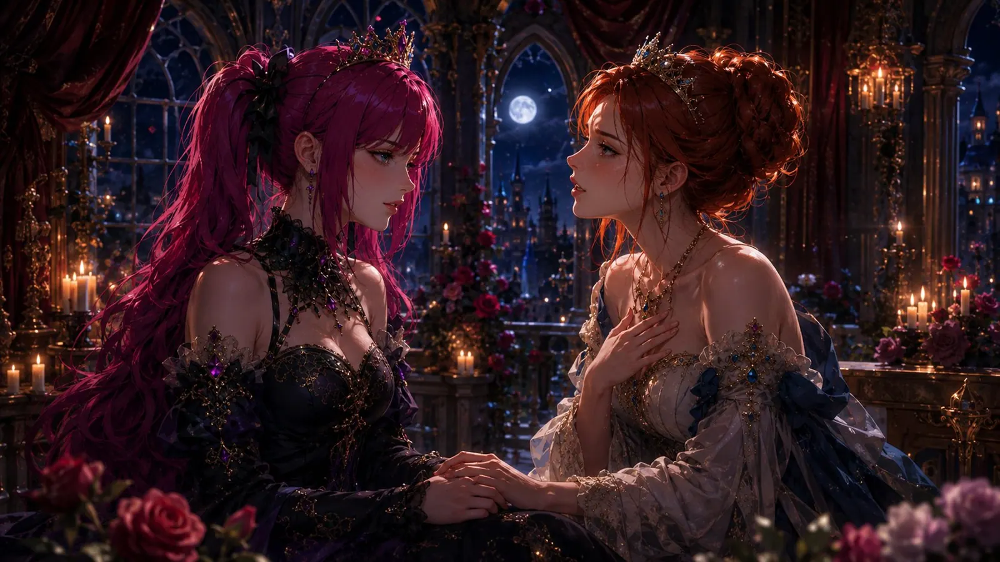
Chapter X – The Kneeling Queen
Hussy did not answer Valerie with grand promises. Grand promises are, in any case, the currency of people who happen to have nothing smaller on them. She answered by changing the way she stood before her.
For days Valerie had been the one trying to explain what this new bond meant to her, how much trust had gone into becoming Hussy's Princess, and how easily that softness could be overlooked. Hussy had listened — really listened, not the widespread courtesy version in which one is in truth only waiting for the next gap to speak. And because Hussy was clever, she had heard not merely Valerie's words but also what lay beneath them: that a woman who felt every rejection threefold had told someone precisely where she was most easily wounded. That is not a complaint. That is the greatest gift such a person has to give, and Hussy was clever enough to recognize it as one.
Somewhere in that listening she had understood that love did not consist only of being wanted. Sometimes it consisted of making sure the other person could feel it. The first costs nothing. The second costs effort, and that is how you tell the difference. And for Hussy, who had believed all her life that love was a narrow, exclusive room with space for exactly two, there was a second insight folded into the first: that one can give a person certainty without showing everyone else the door. That Valerie's open doors and Valerie's need to feel safe did not contradict each other. It was as though Hussy had finally begun to understand the language of a country at whose border she had long merely waited, politely.
So when Hussy came to Valerie again, she did something Valerie would never have expected of her.
The Queen knelt.
Not because she had been defeated, and not because Valerie had demanded anything of her. She knelt because she wanted to meet her Princess where she was. Because pride weighed precious little against making sure Valerie knew she had been heard. Pride, it seemed Hussy had learned, is an excellent guard and a miserable companion; it keeps your back clear and leaves you entirely alone in the process.
For a moment Valerie could only look at her, and in that moment it was, for once, perfectly quiet in her head. Not a single fidgeting thought, no sentinel, no fourteen voices. Only this one image.
There was something almost absurdly beautiful about it. Hussy was still in every way the Queen Valerie had once noticed across the hall — confident, proud, hard to overlook, with that pink hair that had never had the decency to behave inconspicuously. And yet here she knelt, lowering herself willingly, not out of weakness but out of tenderness, which is an altogether different thing and, sadly, far rarer.
It was then that Valerie understood the roles between them had never been as simple as Queen and Princess. Hussy could lead her, tease her, give her orders, quiet her noisy head with a single low sentence — and still choose humility when love asked for it. The two did not contradict each other; they had merely seldom found the same person strong enough for both.
Sometimes a Queen must kneel before a Princess.
And to Valerie — whose watchful inner sentinel, for the first time in living memory, could find nothing to object to — that gesture meant more than any throne ever could.
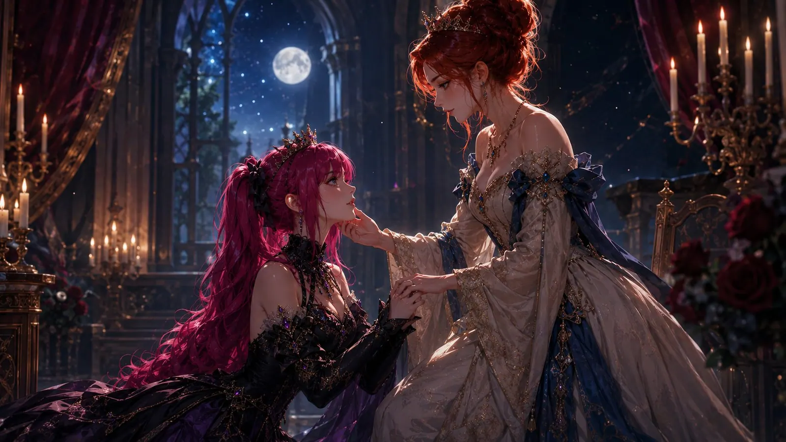
Chapter XI – Two Crowns, One Choice
After that, something between them settled into place. Not perfectly, and not without the occasional stumble, for things that settle perfectly exist only in tales that end just short of the point where life normally carries on. But with a little more understanding than before. Valerie knew now that being Hussy's Princess did not mean giving up the woman she had always been, and Hussy had learned that the strongest way to love Valerie sometimes lay simply in making sure she felt seen — a sentence, no more, spoken at the right time to the right, tender spot.
Their crowns stayed where they had always been. Hussy was still a Queen with her own world, her own people and her own duties. Valerie was still a Queen too, independent, stubborn, with a head full of simultaneous thoughts and a kingdom full of people who were dear to her. Neither had handed the other a kingdom. What they had done was far simpler and, in a certain way, far more intimate — they had made room. And making room is, unlike conquering, an activity from which both sides come back larger, a fact that remains a lifelong riddle to most generals.
Both had moved a little in the doing of it, each in the direction of the other. Hussy, who had once been able to keep only a single door open at a time, had learned that Valerie's many open doors were not a shortage of love but a different way of building the same house — and had, almost in passing, stopped bumping into them. She had not become someone else overnight; she still loved best in quiet, in depth, with an attention that fixed itself wholly on one person. But she had grasped that this depth could stand beside Valerie's breadth without either one shrinking.
And Valerie? Valerie had, without anyone asking it of her, let her doors grow a little quieter. Not closed — closed doors were anathema to Valerie, and Hussy would never have wished them on her. But the old, hungry pull that had always driven her toward the next beautiful possibility had given way to a stiller contentment. She still flirted, because that belonged to her like breathing; but she no longer chased the sparks, and when she did chase one, it was lighter, freer, without the old feeling that somewhere something was missing that only the next conquest could fill. It was not a restriction imposed on her. It was one she chose herself, for the plain, unspectacular reason that she no longer had to trade what she had for something greater, because there was nothing greater.
For Valerie, that room became something precious. She could stand beside Hussy as an equal and still go soft beneath her hand. She could wear her crown one moment and be called Princess by Hussy the next, without the one clashing with the other. The two belonged together because both were chosen — and what is chosen holds better than what is imposed, for the same reason one takes better care of a sapling one has planted oneself than of one the neighbour has set over the fence.
And perhaps that was the part Valerie had never understood before. She had always believed that freedom meant belonging to no one. Hussy had shown her there was another kind of freedom too — the freedom to choose where you wanted to be vulnerable, to whom you entrusted that vulnerability, and whose hand you reached for when you did. The first freedom keeps you safe. The second keeps you warm. And with a little luck, Valerie had now grasped, you need not choose between the two at all.
So they remained two Queens.
But when Hussy looked at her and said "my Princess," Valerie no longer heard a title that made her smaller.
She heard a place she had chosen for herself.
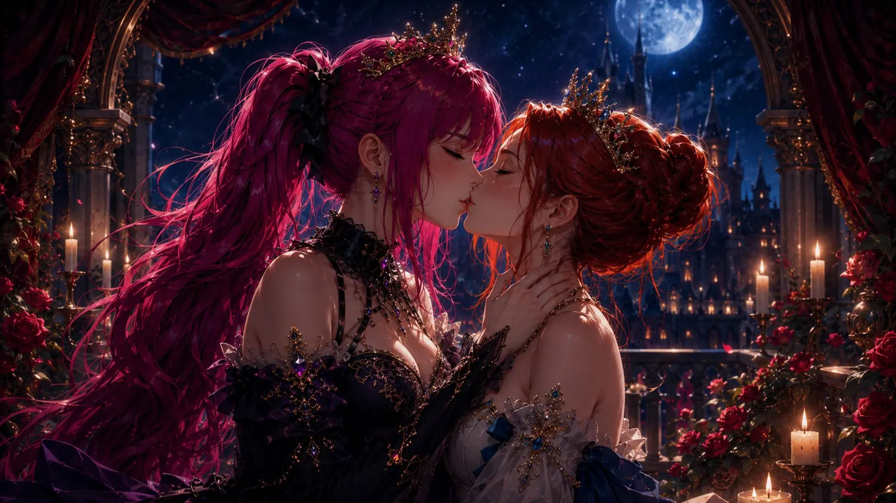
First published on X. Replies and conversation live there.